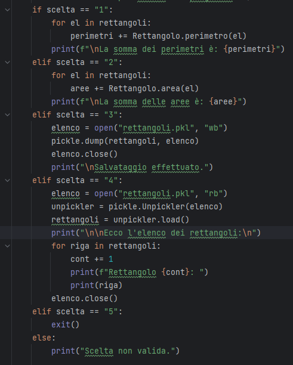
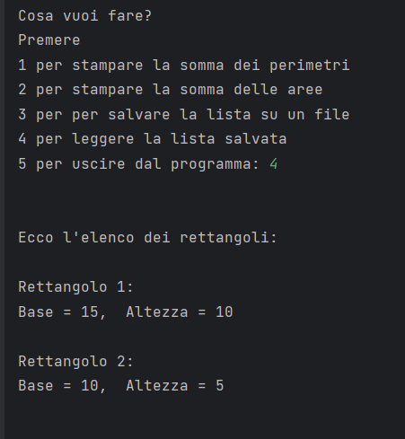
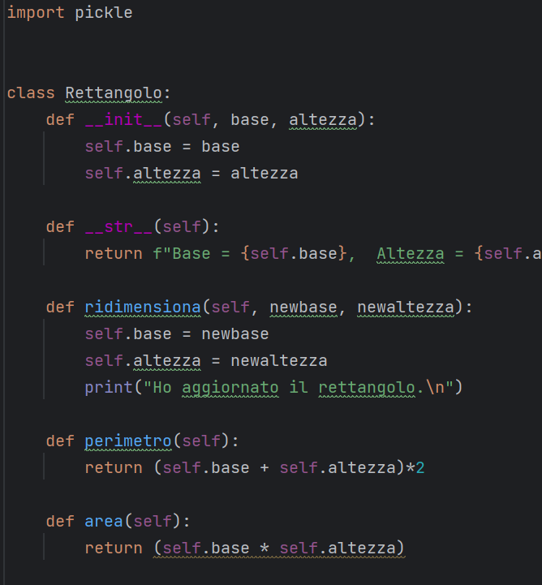

Il progetto gestisce su file Pickle un elenco di rettangoli ed effettua diverse operazioni.
La classe Rettangolo include i metodi per calcolare Area, Perimetro e per Ridimensionare un rettangolo della lista.
L'utente, da console, pul sceglere di calcolare la somma delle aree e dei perimetri di tutti i rettangoli, di salvare l'elenco e di visualizzare la lista salvata.


